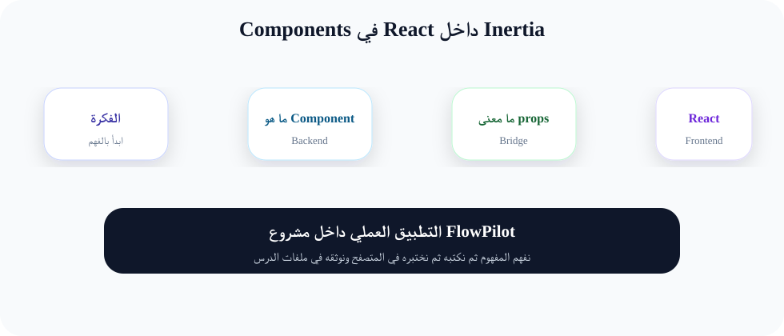
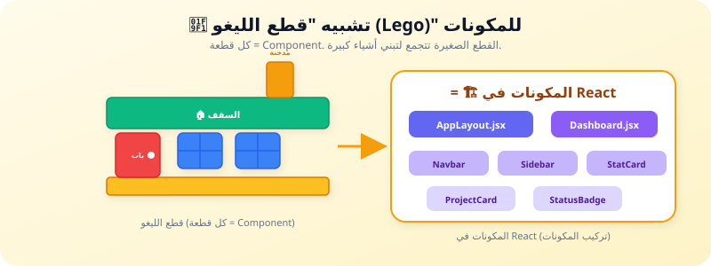

مكونات React (Components): تقسيم الواجهة إلى قطع صغيرة قابلة لإعادة الاستخدام
"لا تبنِ صفحة كاملة دفعة واحدة. ابنِ قطعاً صغيرة كقطع الليغو، ثم اجمعها لتصنع تحفة برمجية."
🔍 لماذا هذا الدرس مهم؟
في الدروس السابقة، كنا نكتب كل الكود داخل صفحة واحدة (مثل Dashboard.jsx). لكن مع نمو التطبيق، ستصبح هذه الملفات ضخمة جداً (1000+ سطر) ويصعب فهمها.
المكونات (Components) هي الحل. بدلاً من ملف واحد ضخم، نقسّم الواجهة إلى قطع صغيرة، كل قطعة لها وظيفة محددة. كل قطعة تسمى "مكون" (Component).
مثلاً: زر "حفظ" هو مكون، بطاقة مشروع هي مكون، شريط البحث هو مكون. كل مكون يُكتب في ملف منفصل ويمكن استخدامه في أي صفحة.
هذا الدرس هو أهم درس في React لأن كل شيء في React عبارة عن مكونات!
📚 الشرح النظري المفصل
ما هو المكون (Component)؟
المكون هو دالة JavaScript تعيد (return) كود JSX (يشبه HTML). كل مكون يمثل جزءاً من واجهة المستخدم.
ملاحظة: اسم المكون يبدأ بحرف كبير (WelcomeMessage وليس welcomeMessage). هذا ليس مجرد تقليد - React تعتبر المكونات التي تبدأ بحرف كبير كمكونات حقيقية.
Props: إرسال البيانات إلى المكونات
Props (اختصار لـ Properties - خصائص) هي طريقة إرسال البيانات من مكون أب (Parent) إلى مكون ابن (Child).
تخيل أنك تطلب بيتزا: أنت (المكون الأب) تقول للمطعم (المكون الابن): "أريد بيتزا بالجبنة". الـ Props هي "الجبنة" - أي التعليمات أو البيانات التي ترسلها.
ملاحظة مهمة: Props هي "قراءة فقط" - لا يمكن للمكون الابن تغيير قيمة Prop. البيانات تتدفق في اتجاه واحد فقط: من الأب إلى الابن.
تقسيم المكونات (Component Composition)
المكونات يمكن أن تحتوي على مكونات أخرى. هذا يسمح لنا ببناء واجهات معقدة من قطع صغيرة.
لاحظ كيف أن ProjectCard يستخدم مكونين آخرين: StatusBadge و TaskList. كل مكون مسؤول عن جزء محدد.
التكرار عبر المصفوفات (Mapping Arrays)
في FlowPilot، سنتعامل مع قوائم: قائمة المشاريع، قائمة المهام، قائمة أعضاء الفريق. لعرض قائمة، نستخدم دالة map() في JavaScript:
key: كل عنصر في القائمة يحتاج إلى key فريد. React تستخدمه لتحديد أي عنصر تغير. استخدم id من قاعدة البيانات. لا تستخدم index المصفوفة أبداً!
العرض الشرطي (Conditional Rendering)
أحياناً نريد عرض شيء فقط إذا تحقق شرط معين. مثلاً: عرض "لا توجد مشاريع" إذا كانت القائمة فارغة.
شرح: && تعني "إذا كان الشرط صحيحاً، اعرض العنصر". ?: (Ternary) تعني "إذا كان صحيحاً اعرض هذا، وإلا اعرض ذاك".
🌍 مثال من الحياة اليومية
تشبيه "قطع الليغو (Lego)"
تخيل أنك تبني بيتاً من قطع الليغو:
- كل قطعة ليغو هي "مكون" (Component). قطعة صغيرة، لها شكل ولون محدد.
- قطعة الباب هي مكون. يمكنك استخدامها في أي بيت تبنيه. (مثل مكون StatusBadge).
- قطعة النافذة هي مكون آخر. (مثل مكون ProjectCard).
- البيت النهائي هو "الصفحة" التي تجمع كل هذه المكونات معاً.
المكونات في React تشبه قطع الليغو: كل قطعة تُصنع وتُختبر وحدها، ثم تُستخدم في تركيبات مختلفة. هذا يجعل بناء التطبيق أسرع وأكثر متعة!
🚀 كيف يخدم هذا الدرس مشروع FlowPilot؟
في FlowPilot، سننشئ مكتبة من المكونات القابلة لإعادة الاستخدام:
📦 ProjectCard
بطاقة لعرض مشروع (عنوان، حالة، تقدم)
🏷️ StatusBadge
شارة ملونة لحالة (نشط، مكتمل، معلق)
✅ TaskBadge
عنصر مهمة مع checkbox
📊 StatCard
بطاقة إحصائية (عدد، عنوان، أيقونة)
⚡ التطبيق العملي خطوة بخطوة
الخطوة 1: إنشاء مكون ProjectCard
المكان: resources/js/Components/ProjectCard.jsx
الخطوة 2: إنشاء مكون StatusBadge
المكان: resources/js/Components/StatusBadge.jsx
الخطوة 3: إنشاء مكون TaskBadge مع عرض شرطي
المكان: resources/js/Components/TaskBadge.jsx
الخطوة 4: إنشاء مكون StatCard للإحصائيات
المكان: resources/js/Components/StatCard.jsx
الخطوة 5: استخدام المكونات في صفحة Dashboard
المكان: resources/js/Pages/Dashboard.jsx
الخطوة 6: استخدام العرض الشرطي - مثال "لا توجد بيانات"
أضف هذا الكود في أي مكان تعرض فيه قائمة قد تكون فارغة:
📝 شرح الكود سطراً سطراً
تحليل ProjectCard.jsx
السطر 1: export default function ProjectCard({ project })
export default يعني أن هذا المكون هو "القطعة الرئيسية" التي سيتم استيرادها من هذا الملف. { project } هو "تفكيك" (Destructuring) للـ Props - نستخرج قيمة project من Props مباشرة.
السطر 2: const statusColors = { 'نشط': 'bg-green-100...', ... }
هذه مصفوفة ترابطية (Object) تربط كل حالة بلون Tailwind. مثلاً عندما تكون الحالة 'نشط'، نستخدم الألوان الخضراء. هذا أفضل من جمل if/else الطويلة.
السطر: {statusColors[project.status] || 'bg-slate-100'}
|| تعني "أو". إذا لم نجد الحالة في statusColors (مثلاً حالة جديدة لم نضفها)، نستخدم اللون الافتراضي (slate). هذا يمنع الخطأ.
تحليل استخدام map() مع key
شرح map و key
projects.map() يمر على كل عنصر في مصفوفة projects ويعيد عنصر JSX جديد لكل واحد.
key={project.id} - كل عنصر يحتاج إلى مفتاح فريد. React تستخدمه لمعرفة أي العناصر تغيرت أو أضيفت أو حذفت. بدون key، React ستعيد رسم القائمة كلها (أداء سيء).
project={project} - نمرر كائن project كاملاً كـ Prop واحد. المكون ProjectCard يستقبل { project } ويمكنه الوصول لـ project.title, project.status, إلخ.
✅ النتيجة المتوقعة
بعد تطبيق المكونات، يجب أن ترى:
- 3 بطاقات إحصائيات (StatCard) في أعلى الصفحة: المشاريع، المهام، الفريق.
- 3 بطاقات مشاريع (ProjectCard) في شبكة (Grid): كل بطاقة لها عنوان، وصف، تاريخ، مالك.
- كل مشروع له شارة حالة (StatusBadge) بلون مختلف: أخضر لنشط، أزرق لمكتمل، أصفر لقيد التطوير.
- قائمة مهام (TaskBadge) مع Checkbox: المهام المكتملة تظهر بخط متقطع وخلفية خضراء فاتحة.
- التصميم متجاوب: على الموبايل يظهر عمود واحد، على سطح المكتب 3 أعمدة.
⚠️ الأخطاء الشائعة
🚫 الخطأ 1: "Component is not defined" أو "is not exported from"
السبب: نسيت استيراد (import) المكون في الصفحة، أو اسم الملف خطأ.
الحل: تأكد من أن import ProjectCard from '../Components/ProjectCard' صحيح. تحقق من اسم الملف وامتداده.
🚫 الخطأ 2: "Each child in a list should have a unique 'key' prop"
السبب: نسيت إضافة key عند استخدام map().
الحل: أضف key={item.id} إلى العنصر الذي تعيده من map. تجنب استخدام key={index} (رقم الترتيب).
🚫 الخطأ 3: Prop غير معرف (undefined) عند عرضه
السبب: أرسلت Prop باسم مختلف عما تتوقعه في المكون الابن.
الحل: تأكد من تطابق اسم Prop في المكون الأب (مثلاً project={p}) مع اسمه في المكون الابن (function Card({ project })).
🚫 الخطأ 4: لا يظهر شيء (Nothing renders)
السبب: غالباً مشكلة في JSX - ربما نسيت return أو استخدمت أقواس معقوفة {} بدلاً من أقواس круглых ().
الحل: تأكد من أن دالة المكون تعيد JSX: const Card = () => ( <div>...</div> ).
🚫 الخطأ 5: المكونات تتداخل بشكل غريب (Layout breaking)
السبب: نسيان إضافة key في map أو استخدام كلاسات CSS غير صحيحة.
الحل: استخدم أدوات المطور (F12) وتفقد العناصر. تأكد من أن كل مكون له هيكل HTML صحيح (div يُغلق بشكل صحيح).
📊 مخططات توضيحية

هيكل المكونات في تطبيق React

تشبيه قطع الليغو للمكونات
📋 ملخص الدرس
المفاهيم الرئيسية
- 🔹 Component: دالة JavaScript تعيد JSX (قطعة واجهة).
- 🔹 Props: بيانات تُمرر من المكون الأب إلى المكون الابن.
- 🔹 map(): دالة للتكرار على مصفوفة وعرض قائمة.
- 🔹 key: مفتاح فريد لكل عنصر في القائمة.
- 🔹 Conditional Rendering: عرض شيء فقط إذا تحقق شرط.
قواعد ذهبية
- 🔸 اسم المكون يبدأ بحرف كبير:
ProjectCard. - 🔸 Props هي "قراءة فقط" - لا تغيرها داخل المكون.
- 🔸 كل عنصر في map يحتاج
keyفريد. - 🔸 مكون واحد = ملف واحد = مسؤولية واحدة.
- 🔸 استخدم العرض الشرطي للحالات الفارغة.